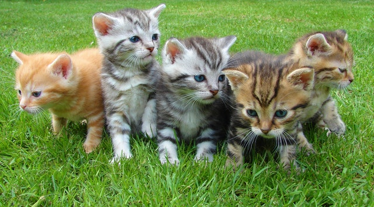
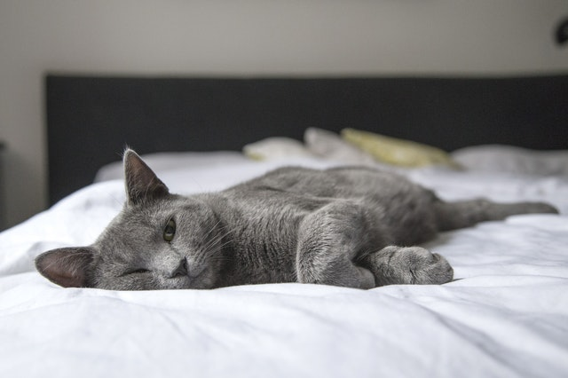

貓咪這種生物
貓咪是一種迷人又有趣的生物，雖然他們的體型跟外表不像狗狗一樣多變，但多變的花色及逗趣的行為依然讓我們為之著迷，不管是特色鮮明的品種貓，還是最多人飼養的米克斯，只要你喜歡就通通是好貓。
養貓的人越來越多，看著朋友分享自家貓咪的可愛模樣，許多人也跟著想養了，但是，你真的適合養貓嗎？先來了解看看養貓要做哪些事？會遇到哪些難題，下定決心後再養吧。貓咪不是物品，他們是跟你我一樣需要受到尊重的生命。

貓咪的特徵與習性
- 生性孤獨，有嫉妒性貓喜歡孤獨而自由的生活。除發情交配外，很少成群的在一起棲息，喜歡四處遊蕩。不認特定的主人，只要哪裡有較好的食物和生活環境，它就在哪裡定居。貓也有嫉妒心，它會嫉妒同類甚至小孩，所以養貓時要態度和藹，要「一碗水端平」，注意培養與貓的感情。
- 聰明伶俐，感情豐富貓是非常聰明的動物之一。有人認為犬能做的一切動作，貓都能學會。但由於貓性格倔強，不屈服於主人的權威，對主人的命令不盲目服從，若對其採取強制手段，則必將其惹惱。貓雖無哭笑的表情，但有顯示喜怒哀樂的動作和變化。高興時耳朵揚起，鬍鬚放鬆，尾尖輕輕擺動，瞳孔自然。發怒時則兩耳豎起並向後擺，耳尖向里彎，瞳孔縮小呈一條縫，鬍鬚向兩邊豎起，尾巴狠狠地拍打地面，兩前肢伏地，隨時準備躍起。要求主人愛撫時，兩眼微閉，尾巴溫和的擺動，靠近主人來回走動，並發出細微的叫聲，搖頭擺尾向主人撒嬌。
- 貓是以肉食為主的雜食動物。一般來說，貓喜食魚、肉和動物內臟，在極度飢餓的情況下，也吃些米飯、饅頭等穀類食物。當然，貓擇食也有一個習慣問題，受主人飲食習慣的影響，貓也會有所改變。有些食物（如水果類）即使在美味可口，貓也不會進食，這可能是貓對甜味不敢興趣的有關。
- 貓喜愛清潔，往往在吃食、玩耍後喜歡用舌頭舔自身被毛或舔濕爪子洗臉。這是處於生理需要，舌舔被毛是為了刺激皮脂腺的分泌，使被毛光亮潤滑，不易被水打濕；同時可舔食到一定量的維生素D，促進骨骼生長發育；也可使被毛蓬鬆，在炎熱時可促進散熱；舌舔被毛還能防止被毛感染寄生蟲。貓有便後將糞便掩埋乾淨的習慣性。今天看來雖已全然失去了當初的內涵，卻為貓贏得了愛清潔的美譽。
- 貓的一生中，約有2/3的時間在睡覺，在所有的家養哺乳動物中，貓的睡眠時間最長。貓每次睡眠時間並不長，但每天卻睡很多次，加起來的時間就長了。貓是一種警覺性較高的動物，在睡眠時，可保持對環境的反應能力，以便在極短的時間內迅速恢復足夠的搏擊力量。貓非常喜歡休閒、輕鬆和舒適。喜歡呆在窗台上溫暖的地方，或者是在心愛的坐墊上，這是貓生活方式的重要特徵。貓至今仍然保留著肉食動物那種晝伏夜出的習性，很多活動（如捕鼠、求偶交配等）常常是在夜間進行的。貓的各種機能在夜間均比白天活躍。
- 貓的適應性較強，凡是有人類居住的地方，均有貓的存在。成年貓每年於春夏和秋冬交替季節各換一次毛，以適應氣候的變化。
- 捕獵是貓的原始本能，因為沒有這種本能，在野生狀態下就無法生存。貓捕獵時，首先悄悄地靠近獵物，當發現目標後，就會利用一切可能利用的掩體，小心的靠近目標。然後貓的腹部緊貼地面，以一種迅速潛行的動作向前運動，再短暫停止，專心致志的觀察獵物。如此反覆，以到達靠近獵物的隱蔽處，安靜的等待進攻。然後，貓離開掩體，身體緊貼地面，迅速向前衝擊，進入攻擊距離後，抬高前身撲到獵物身上，接著給獵物致命一咬。
- 貓的好奇性很強，特別是幼貓，對球特別好奇，常用力前沖撲向小球，或用前足扑打、玩弄小球，一個小球往往能玩上半天。亦會撲向空中飛舞的小蟲，甚至空中無物也會撲上撲下，有人認為這是貓在訓練捕獵本領，不必制止。
養貓前的自我檢視

Q1.我適合養貓嗎?
貓咪對環境的變化很敏感，所以如果近期內你的生活會有太大變動就
暫時不適合養貓，建議等生活穩定下來之後再養。較大的變動包含：
結婚、搬家、長期出國、生小孩。
※ 這裡指的是「尚未養貓而想養貓的人」應該考慮的事項，可不是叫已經養貓的人棄養貓咪喲！
Q2.要養幼貓還是成貓?
一般而言，幼貓和成貓的特性如下（但也是要看每隻貓的個性）。
幼貓：較愛玩，可能會有咬人等等的壞習慣，如果飼主不懂得以適當方式教導，可能會使他變本加厲。
成貓：個性穩定，且如果他流浪過，會更珍惜有家的好，反而更加親人。
許多人都會認為幼貓從小養一定比較親人聽話，但如果飼主不夠了解貓咪，而以錯誤的方式對待和教導他，那什麼樣的貓都很有可能出現行為問題。就像人類的小孩也是剛出生就和父母相處，但有的父母能教出人人稱讚的乖孩子，有些就令人搖頭，是同樣的道理。
Q3.養貓注意事項以及要準備哪些用品?
- 基本的用品：貓咪不會有機會逃脫的外出籠、食盆、水碗、指甲剪、梳子、貓抓板（避免他抓你的家具）、貓砂（一開始建議用礦砂）及貓砂盆。
- 營養且合適的食物：有乾糧和濕食，乾糧雖較方便但對貓咪健康不好，新手建議餵主食罐。另外，貓是肉食性動物，不像狗狗是雜食性，因此千萬不要餵人類的食物，一來食材不符合貓咪營養需求，二來人的食物有調味料，對動物來說很傷身。
- 乾淨的飲水：水要給煮過的，不可餵生水或礦泉水。要積極讓貓咪攝取足夠水分，很多貓都是水喝不夠而得腎病的。
- 健康檢查：如果中途還沒帶貓咪去看過醫生，你接回家後要先帶去給獸醫看，做基本的健康檢查。如果貓咪有流浪過也要跟醫生說，會影響檢查項目。
- 每天清1～2次貓砂。
- 固定一段時間梳毛、剪指甲、餵化毛膏（或可用南瓜泥、地瓜泥代替）。
- 每天要陪他玩、跟他說話、摸摸他。不要直接用手腳跟他玩（可以用玩具），以免養成他咬手腳的習慣。也不要都不理他，把他當成家裡的擺飾。貓咪也是需要關愛和陪伴的。
- 生病看醫生、（動物沒健保，看起醫生來有可能會很燒錢，這點一定在養之前就要考慮清楚）、1～3年打一次疫苗、做健康檢查、夠大之後要結紮。
- 洗澡可一年1～2次，但有些品種油脂分泌較旺盛，洗澡頻率要較高。貓咪很敏感，如果送去寵物美容，他們可能會因太過緊張而弄傷美容師或是自己，因此最好能學會自己在家洗澡、剃毛等等。
- 貓咪喜歡垂直空間，可以買貓跳台或用家中現有的櫥櫃，擺放成階梯狀的高低落差，消耗貓咪多餘的精力。另外，最好有窗邊的空間或陽台能讓他們看窗外的風景、小鳥，及曬曬太陽。
Q4.養貓可能會遇到的問題(請自身判斷)
- 掉毛:即使是短毛貓也會掉毛，長毛貓更不用說，尤其換毛季的掉毛量是很可怕的。如果有嚴重潔癖又無法勤於打掃，養貓前恐怕得考慮一下。
- 不親人:通常只要飼主付出足夠的關愛及時間照顧、陪伴貓咪，大多貓咪都會親近飼主，甚至黏人撒嬌。但有些貓咪會因為本身的個性，或曾經受過人類傷害等原因，而始終害怕人類，或即使不害怕，但也很少主動親近人或不喜歡讓人抱，所以如果你喜歡熱情黏人的寵物，可以優先考慮養狗，或是養貓前先跟他相處，了解他的個性。
- 抓家具:貓咪會磨爪以去除老廢指甲，所以飼主必須準備貓抓板。但有些貓即使有貓抓板也會抓其他家具，因此如果完全不能接受，就要考慮一下是否要養貓。
- 晚上不睡覺:貓咪是夜行性動物，因此半夜跑跳、玩耍或吵鬧是正常的。有些飼主能透過訓練或一些方式讓貓咪跟著飼主的作息生活，但不是每個人都能成功，所以必須把這一點也考慮進去。
- 亂尿尿:貓咪亂尿尿的原因很多，可說是養貓常見的困擾，飼主也必須全盤了解貓咪的習性，才能避免／改正這種狀況。
- 生病:貓咪沒有健保，即使是平常的皮膚病、感冒等等的小病，一次也要幾百塊，複診就要上千塊，更不用說其他較嚴重的疾病了。因此如果不願意在貓咪身上花那麼多錢，或無法在平時就慢慢存下醫療基金，養貓前可能就要考慮一下。
- 情侶分手:有些情侶談戀愛時甜蜜蜜，就想養寵物為感情加溫，但是否有先考慮過，萬一有天分手，寵物誰要養？「分手後把貓咪接回來養會觸景傷情。」「貓咪比較喜歡對方，我才不要養他。」如果會有這些想法，那還是不要養比較好。
- 家人反對:不管你如何「猜想」、「感覺」家人一定可以接受你養寵物，都還是請你先實際詢問過家人，所有人都同意再養。有些比較誇張的案例中，曾經有家人偷偷將寵物帶到遠處「放生」，因此不能輕視這一點。
- 懷孕生子:常常養寵物養得好好的，一懷孕就有些根本不了解實情的人會碎嘴要你把寵物送人，還沒遇到前你可能會認為自己不可能這麼做，但實際遇到後，心意不夠堅定的人可能就會開始覺得：「嗯，這麼說也對。」「好煩哦，好啦好啦送給別人養，不要再煩我了！」所以請先了解相關知識，到時就由你來說服別人，而不是聽信他人不可靠的言論。
養貓前務必把這些因素考慮進去，不要一時興起，養了之後再來說因為我有多不得已、因為貓多壞，我才被逼把他送人，那都是傷害生命的藉口罷了。
養貓好文連結
對貓「無感」？養貓比養狗還要好的8個理由
養貓新手上路
影片分享